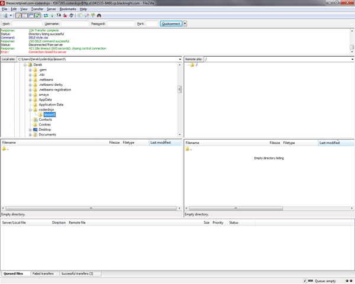
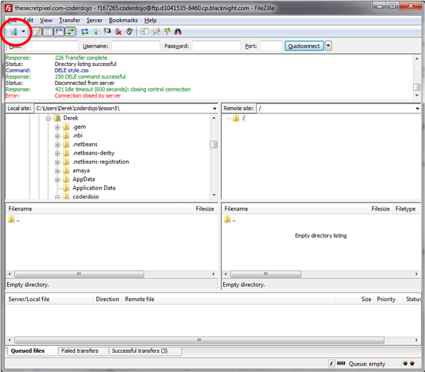
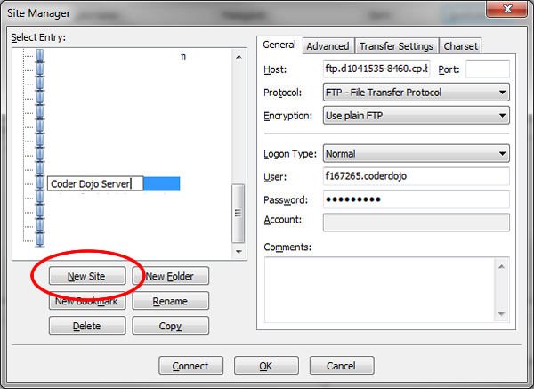
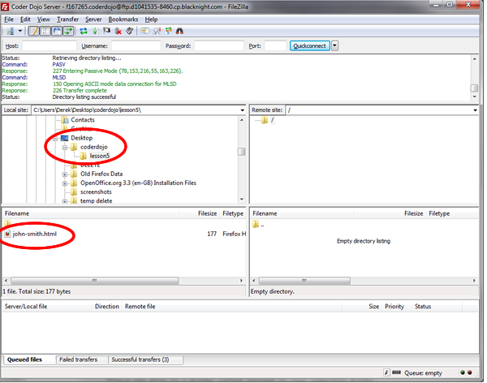
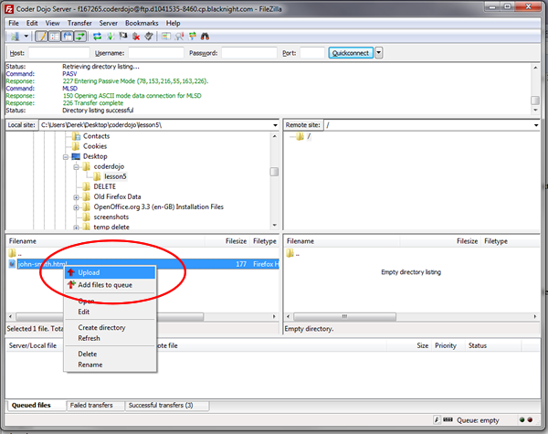
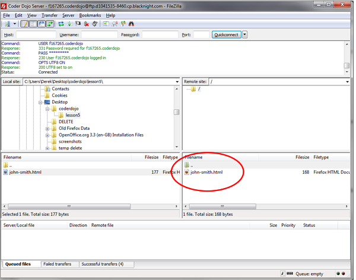

We are going to learn how to transfer files from your computer to a web server.
FTP stands for File Transfer Protocol. This is one of the methods is used to transfer files from computer to computer. Web developers use it to transfer files from their own computer to a web server. In this lesson we will learn how to transfer files from your own computer to a web server.
To use FTP you need an FTP client. In computer science a client is a program that accesses a server. So we will be using an FTP client to access an FTP Server. You will start with files on your computer and you will “FTP” them up to the server.
There are lots of FTP client programs. A good free one is called Filezilla. You can get Filezilla here --> http://filezilla-project.org/
Download it and install it onto your computer. When it is installed open it up and your will see a window like this.

The left hand side of the window shows you files that are on your computer and the right hand side of the window shows you the files that are on the server. You wont see any files on the right hand side because you are not connected to the server yet.
So how do you connect to the server? You need connection details. For every connection to a server you will need 3 things:
Hostname is the name of the server that you want to FTP your files to. This can be a name like ftp.myserver.com or an IP address like 101.101.111.122. Don’t worry about what an IP address is for now. You will learn more about that in another lesson. For now all you need to know is that your host name can be an IP address.
Username is just a name that the server recognises. This is just like your username for Gmail or Facebook only it is for the FTP server.
Password is just a password. This is to stop people who shouldn’t have access to your server from FTPing files to it. If you have your own server you should always make sure that our FTP password is something hard to guess and you must only ever give the password to people that you trust. Web sites can be hacked by people who simply guess passwords.
So if you have your FTP client and your hostname, username and password you are ready to FTP files up to the server.
In Filezilla click the button circled in the screen shot below.

Click the “New Site” button.

Give it a name that makes sense like “Coder Dojo Server”. On the right hand side you can enter your connection details.
Copy and paste these values in
Hostname -->
ftp.d1041535-8460.cp.blacknight.com
Username -->
f167265.coderdojo
Password -->
coderdojo
To connect to the server do the following
Don't worry if this sounds complicated just follow the steps and it will work.
Then all you have to do is click “Connect”. If you entered everything correctly you will see folders on the right hand side. These are folders on the server where you can put your files. If you put them in the right place you will be able to see them on the web.
Now that you are connected you can upload a file up to the server.
Open a new file in your text editor. Save the file as your-name.html. So if you are called John Smith create a file called john-smith.html. Open up the file and type
<!DOCTYPE html>
<html>
<head>
<title>First Page on the Web!!</title>
</head>
<body>
<h1>Hello World!!</h1>
<p>This is my first web page on the Web!!</p>
</body>
</html>
Save the file in a folder called lesson5 in your coderdojo folder.
In Filezilla on the left hand side find the file that you just saved like in the screen shot below.

Right click the file and click “upload”. The file should then be transferred to the server in a couple of seconds.

No you should see the following -->

Now you can go to your your web page and anyone with a web connection can see it too.
http://www.thesecretpixel.com/coderdojo/john-smith.html
Just change the name of the file to the name of the file that you uploaded.
Now you have your first web page actually on the web.
What you have learned today are the basics of using an FTP client. You can try uploading images and other HTML files.
While writing HTML code you may forget a particular tag or not sure about a tags attributes. There are a many resources on the internet to help you find the answers.
The following are some good web sites to help you find the answers.